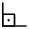
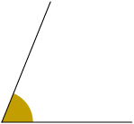

Página 138
unidade
7
Ângulos e retas
Nesta unidade, você vai:
- compreender a ideia de ângulo;
- identificar os lados e o vértice de um ângulo;
- reconhecer o grau como unidade de medida de ângulos;
- utilizar o transferidor para medir e construir ângulos;
- diferenciar ângulos agudos, retos, obtusos e rasos;
- estudar retas e segmentos de retas;
- reconhecer retas paralelas e concorrentes e traçá-las com o auxílio de esquadros.
Página 139
Em todas as câmeras fotográficas, convencionais ou digitais, o princípio básico da formação de imagem é o mesmo: o da câmara escura. Para exemplificar uma câmara escura, imagine uma caixa fechada com paredes opacas e escuras, um orifício pequeno em uma das faces e uma abertura na face oposta coberta com papel vegetal. Ao apontar a face do orifício para um objeto bem iluminado, a luz que partirá dele entrará pelo orifício e formará uma imagem invertida desse objeto no interior da caixa, uma vez que a luz se propaga em linha reta.
Página 140
Trilha
35
As ideias de ângulo
Na confecção de esculturas, é comum o uso de bases giratórias, onde a matéria-prima é colocada de maneira que o artista possa girá-la quando necessário, podendo assim esculpir diferentes partes do objeto sem que precise se deslocar.
Repare a artista esculpindo uma tartaruga em uma base giratória.
A seguir, temos a representação de alguns giros realizados na base giratória, partindo sempre de uma posição inicial.

- Meia-volta no sentido anti-horário.
- Um quarto de volta no sentido horário.
- Uma volta completa no sentido horário.
O sentido horário é o mesmo dos ponteiros do relógio. Já o anti-horário é contrário ao dos ponteiros do relógio.
Esses giros podem ser representados da seguinte maneira.
Giros em torno de um ponto fixo possibilitam a ideia de ângulo.
Página 141
No dia a dia, há outras situações em que podemos perceber a ideia de ângulo.
As imagens não estão representadas em proporção.
- Descreva em seu caderno uma situação em que podemos perceber a ideia de ângulo, diferente das apresentadas.
Possíveis respostas: Abertura de uma tesoura, inclinação de um telhado, abertura dos ponteiros de um relógio.
Ângulo é uma figura geométrica formada por duas semirretas de mesma origem.
Os lados do ângulo apresentado ao lado são as semirretas e , e seu vértice é o ponto O, que é a origem das semirretas. Indicamos esse ângulo por , ou .
Uma semirreta tem começo, mas não tem fim. A imagem mostra a representação da semirreta de origem em O passando por A.
Atividades
1. No pátio de manobras de um aeroporto, um avião estacionou de frente para a direção Norte, como mostra a imagem a seguir.
Escreva no caderno para qual direção o avião ficará de frente se, partindo sempre dessa posição inicial, ele realizar um giro de:
a) um quarto de volta no sentido horário.
Resposta: Leste
b) meia-volta no sentido anti-horário.
Resposta: Sul
c) três quartos de volta no sentido horário.
Resposta: Oeste
d) três voltas no sentido anti-horário.
Resposta: Norte
2. Para abrir o cofre representado na imagem é necessário realizar, a partir da posição que a seta está, a seguinte sequência de giros na roleta.
1º. Três quartos de volta no sentido horário.
2º. Meia-volta no sentido anti-horário.
3º. Um quarto de volta no sentido horário.
4º. Uma volta e meia no sentido anti-horário.
Após realizar a sequência de giros, para que letra a seta estará apontando na roleta do cofre?
Resposta: letra A
Página 142
3.  Pedro e seu irmão estão brincando com um jogo cujo objetivo é traçar o caminho que o carro deve percorrer do início ao fim da pista, desviando-se dos obstáculos. A seguir, estão representadas as quatro primeiras fases desse jogo.
Pedro e seu irmão estão brincando com um jogo cujo objetivo é traçar o caminho que o carro deve percorrer do início ao fim da pista, desviando-se dos obstáculos. A seguir, estão representadas as quatro primeiras fases desse jogo.
![Imagem de uma malha quadriculada com 5 linhas e 8 colunas. A esquerda do lado de fora da malha, próximo a segunda linha há a ilustração de um carro e está escrito 'início'. E próximo da segunda linha, mas do lado direito fora da malha, há uma bandeira e está escrito 'fim'. Há 3 cones na malha, um está localizado na segunda linha da terceira coluna, outro está na terceira linha da quinta coluna, e o último está na primeira linha da sexta coluna. Também há 3 pneus na malha, no qual um está na quarta linha da segunda coluna, outro está na quinta linha da quarta coluna, e o último está na quarta linha da sétima coluna.](../resources/images/un7/i2850ri_6sam_g24_e003_re.png)
![Imagem de uma malha quadriculada com 5 linhas e 8 colunas. A esquerda do lado de fora da malha, próximo a quinta linha há a ilustração de um carro e está escrito 'início'. E próximo da segunda linha, mas do lado direito fora da malha, há uma bandeira e está escrito 'fim'. Há 5 cones na malha, um na segunda linha da primeira coluna, outro na terceira linha da quinta coluna, outro na primeira linha da sexta coluna, outro na primeira linha da oitava coluna, e o último na quinta linha da oitava coluna. Também há 4 pneus na malha, um na primeira linha da primeira coluna, outro está na quinta linha da quarta coluna, outro está na segunda linha da quinta coluna, e o último na quarta linha da sétima coluna. Além disso, há pedras na quinta linha da segunda coluna e na primeira linha da terceira coluna.](../resources/images/un7/i2852ri_6sam_g24_e003_re.png)
![Imagem de uma malha quadriculada com 6 linhas e 8 colunas. A esquerda do lado de fora da malha, próximo a quarta linha há a ilustração de um carro e está escrito 'início'. E próximo da primeira linha e da sétima coluna, mas do lado de fora da malha, há uma bandeira e está escrito 'fim'. Há 3 cones na malha, um está localizado na primeira linha da primeira coluna, outro está na segunda linha da quarta coluna, e o último está na terceira linha da sexta coluna. Também há dois pneus, um na quarta linha da segunda coluna, e o outro na sexta linha da quinta coluna. E além disso, há pedras na quarta linha da quarta coluna e na quinta linha da oitava coluna.](../resources/images/un7/i2851ri_6sam_g24_e003_re.png)
![Imagem de uma malha quadriculada com 6 linhas e 8 colunas. A esquerda do lado de fora da malha, próximo a terceira linha há uma bandeira e está escrito 'fim'. E próximo da quarta linha, mas do lado direito fora da malha, há a ilustração de um carro e está escrito 'Início'. Há 3 cones na malha, um na quarta linha da terceira coluna, outro na quinta linha da quarta coluna, e o último na sexta linha da sétima coluna. Também há dois pneus, um na segunda linha da segunda coluna e o outro na quarta linha da sexta coluna. Além disso, há pedras na primeira linha da sexta coluna.](../resources/images/un7/i2853ri_6sam_g24_e003_re.png)
Para ajudar seu irmão a concluir essas fases, Pedro escreveu o seguinte passo a passo.
Passo a passo
1 ) Siga em frente uma casa. Chegou ao fim? Se sim, o jogo terminou; se não, vá ao passo 2.
2 ) A casa da frente tem algum obstáculo? Se sim, vá para o passo 3; se não, retorne ao passo 1.
3 ) O obstáculo na casa da frente é um cone? Se sim, vire à direita e retorne ao passo 1; se não, vire à esquerda e retorne ao passo 1.
a) Utilizando o passo a passo escrito por Pedro é possível concluir essas quatro fases do jogo? Justifique sua resposta.
Resposta: Sim, pois o passo a passo permite que o carrinho chegue até o fim das pistas.
b) Analise as próximas fases, apresentadas a seguir, e, usando um procedimento parecido com o de Pedro, escreva em seu caderno um passo a passo que possibilite concluí-las.
![Imagem de uma malha quadriculada com 6 linhas e 8 colunas. A esquerda do lado de fora da malha, próximo a segunda linha há a ilustração de um carro e está escrito 'início'. E próximo da segunda linha, mas do lado direito fora da malha, há uma bandeira e está escrito 'fim'. Há 3 cones na malha, um na quinta linha da primeira coluna, outra na sexta linha da quarta coluna, e o último na quinta linha da oitava coluna. Também há 3 árvores na malha, uma na segunda linha da segunda coluna, outra na primeira linha da sétima coluna.](../resources/images/un7/i2854ri_6sam_g24_e003_re.png)
![Imagem de uma malha quadriculada com 6 linhas e 8 colunas. A esquerda do lado de fora da malha, próximo a quinta linha há a ilustração de um carro e está escrito 'início'. E próximo da última linha e da sétima coluna, mas do lado de fora da malha, há uma bandeira e está escrito 'fim'. Há 3 cones na malha, um na quinta linha da terceira coluna, outro na terceira linha da quarta coluna, e o último na quinta linha da sexta coluna. Também há 4 árvores, uma na segunda linha da segunda coluna, outra na primeira linha da terceira linha, outra na segunda linha da sétima coluna, e a última na quarta linha da oitava coluna.](../resources/images/un7/i2855ri_6sam_g24_e003_re.png)
Sugestão de resposta: Passo a passo: 1) Siga em frente uma casa. Chegou ao fim? Se sim, o jogo terminou; se não, vá ao passo 2. 2) A casa da frente tem algum obstáculo? Se sim, vá para o passo 3; se não, retorne ao passo 1. 3) O obstáculo na casa da frente é uma árvore? Se sim, vire à direita e retorne ao passo 1; se não, vire à esquerda e retorne ao passo 1.
Página 143
Trilha
36
Medindo ângulos
O grau
A ideia de dividir a circunferência em 360 partes iguais é atribuída aos babilônios, civilização que viveu por volta de 1700 a.C. na Mesopotâmia, onde atualmente é o Iraque. Cada uma dessas 360 partes iguais é utilizada como unidade de medida de ângulo, que conhecemos por grau.
Fontes dos dados: EVES, Howard . Introdução à história da matemática. Tradução: Hygino H. Domingues. Campinas: Editora da Unicamp, 2004. p. 63. ROONEY, Anne. A história da matemática: desde a criação das pirâmides até a exploração do infinito. São Paulo: M. Books do Brasil. 2012. p. 17-18.
Para obter um grau, podemos imaginar uma circunferência dividida em 360 partes iguais. Um grau é a medida da abertura de um ângulo com vértice no centro da circunferência correspondente a cada uma dessas partes, que indicamos por .
Se considerarmos uma volta completa, temos um ângulo cuja abertura mede .
Podemos medir a abertura de um ângulo, ou seja, determinar a medida desse ângulo, em grau, utilizando um instrumento de medida chamado transferidor.
Transferidor de

Transferidor de
Nos transferidores há duas graduações: uma no sentido horário e outra no sentido anti-horário.
Para determinar a medida do ângulo a seguir, posicionamos o centro do transferidor no vértice. A linha marcada com o zero, ou seja, a linha de fé, deve coincidir com um dos lados do ângulo.
Nesse caso, a medida do ângulo é lida no transferidor no sentido anti-horário, ou seja, .
Página 144
Nas imagens a seguir, estão representadas as medidas de alguns ângulos.
Na imagem A está representado um ângulo cuja medida é , que corresponde a um giro de um quarto de volta. Esse ângulo é chamado ângulo reto e o indicamos pelo símbolo .
Já na imagem B está representado um ângulo cuja medida é , que corresponde a um giro de meia-volta. Esse ângulo é chamado ângulo raso.
Construindo ângulos com o transferidor
Utilizando um transferidor, podemos construir ângulos. A seguir, veremos como construir um ângulo cuja medida é utilizando régua e transferidor.
1º. Traçamos uma linha, que será um dos lados do ângulo, e marcamos o vértice O.
2º. Posicionamos o centro do transferidor em O e alinhamos o lado do ângulo com a linha de fé. Em seguida, marcamos .
3º. Por último, traçamos o outro lado do ângulo usando como referência a marcação feita no passo anterior.

Para saber qual abertura do ângulo estamos considerando, indicamos essa abertura, por exemplo, com um "arco".
Caso não haja indicação de arco, consideramos a abertura de menor medida.
Na seção Explorando tecnologias, ao final deste volume, há orientações sobre um software de geometria para construir e medir a abertura de ângulos.
Página 145
Ângulo agudo e ângulo obtuso
Nas imagens, estão representados dois ângulos de medidas diferentes.
Em cada caso, o lado e a linha tracejada formam um ângulo reto, ou seja, um ângulo cuja medida é .
Na imagem A está representado um ângulo cuja medida é maior do que e menor do que . Esse tipo de ângulo é chamado ângulo agudo.
Já na imagem B está representado um ângulo cuja medida é maior do que e menor do que . Esse tipo de ângulo é chamado ângulo obtuso.
- Um ângulo cuja medida é é agudo ou obtuso? E um ângulo cuja medida é ?
Resposta: agudo; obtuso
Atividades
4. Determine a medida, em grau, de cada ângulo indicado a seguir.
Resposta:
Resposta:
Resposta:
Resposta:
5. Considere a figura a seguir.
a) Utilizando um transferidor, determine as medidas dos ângulos agudo e obtuso dessa figura.
Resposta: agudo: ; obtuso:
b) A figura tem algum ângulo reto? Se sim, quantos e quais são?
Resposta: Sim; 2 ângulos retos: e
6.  Estime a medida de cada ângulo. Depois, utilizando um transferidor, determine a medida deles e compare com a sua estimativa.
Estime a medida de cada ângulo. Depois, utilizando um transferidor, determine a medida deles e compare com a sua estimativa.
a) 
Resposta:
b) 
Resposta:
Página 146
7.  Estime a medida de cada ângulo indicado a seguir e classifique-o em reto, raso, agudo ou obtuso.
Estime a medida de cada ângulo indicado a seguir e classifique-o em reto, raso, agudo ou obtuso.
As imagens não estão representadas em proporção.
Resposta: ; agudo
Resposta: ; raso
Resposta: ; obtuso
- Agora, meça os ângulos indicados e compare com as medidas que você estimou.
8.  Utilizando régua e transferidor, construa um ângulo cuja medida seja:
Utilizando régua e transferidor, construa um ângulo cuja medida seja:
a) .
b) .
c) .
d) .
e) .
Respostas nas orientações ao professor.
9. As imagens apresentam dois modelos de esquadro.

De acordo com essas imagens, determine e escreva no caderno a medida dos ângulos indicados nos encaixes dos esquadros de cada item. Depois, classifique-os em reto, raso, agudo ou obtuso.
Resposta: ; obtuso
Resposta: ; raso
Resposta: ; agudo
10. Manuel e Maria estão observando o jardim através de uma porta. Na imagem, está representado o ângulo de visão de cada um deles nesse momento.
![Imagem de Manuel e Maria à esquerda observando o jardim que está a direita. Há uma linha tracejada azul representando o ângulo de visão de Manuel, e outra em vermelho representando o ângulo de visão de Maria, ambos através de uma porta que divide o jardim do lugar que eles estão. Dentro do ângulo de visão de Manuel, no jardim há uma bicicleta e um carrinho. E dentro do ângulo de visão de Maria, no jardim há uma bicicleta e uma bola. Além disso, a medida do ângulo de visão horizontal de Manuel é 22 graus e de Maria é 32 graus.](../resources/images/un7/i2811rm_6sam_g24_e003_aj.png)
a) Utilize um transferidor para determinar a medida do ângulo de visão horizontal do jardim de cada personagem.
Resposta: Manuel: ; Maria:
b) Qual objeto do jardim pode ser observado tanto por Manuel quanto por Maria?
Resposta: bicicleta
c) Manuel consegue observar a bola? E Maria?
Resposta: Não; Sim.
d) Qual objeto do jardim somente Manuel consegue observar?
Resposta: carrinho
Página 147
Matemática em destaque
11. Na Califórnia, alguns surfistas, buscando diversão nos dias com poucas ondas, pregaram rodas de patins num pedaço de madeira, e assim surgiu o skate. Os primeiros eram muito limitados, por serem formados apenas por uma tábua plana com quatro rodinhas. Porém, foram sendo aperfeiçoados até sua fabricação e comercialização em escala industrial em 1959.
Sandro Dias, também conhecido como Mineirinho, foi um dos principais esqueitistas brasileiros. Ele ficou mundialmente famoso por ser um dos esqueitistas que conseguiram executar com perfeição a manobra de um giro de duas voltas e meia.
Fontes dos dados: MARQUES, Anderson Luiz Amorim. Skate or die: a cultura do skateboarding e a sua influência na edição de street parts. 2018. Trabalho de conclusão de curso (Bacharel) - Universidade Federal de Mato Grosso, 2018. NEGRINHO, Alison. Correio. Sandro Dias fala sobre os desafios da carreira. Disponível em: https://tedit.net/dEs5ml. Acesso em: 30 jun. 2022.
a) Você pratica esqueitismo ou conhece alguém que pratica? Quais manobras com giros você já viu ou já realizou?
Resposta pessoal.
b) A quantos graus corresponde o giro da famosa manobra de Mineirinho?
Resposta:
c) Desenhe em seu caderno uma representação de cada giro indicado a seguir e determine a quantos graus eles correspondem.
- Uma volta.
- Duas voltas.
- Uma volta e meia.
- Três voltas e meia.
- Meia volta.
Respostas nas orientações ao professor.
d) Fique em pé e realize sobre sua base cada um dos giros indicados no item c a partir de uma mesma posição.
Resposta pessoal.
Página 148
Trilha
37
Retas e segmentos de reta
Em Matemática, a reta não tem começo nem fim, ou seja, não tem extremidades. Para indicar uma reta, utilizamos letras minúsculas do nosso alfabeto. A seguir, estão representadas três retas, nomeadas r, s e t.
Uma parte ou um pedaço de uma reta compreendido entre dois de seus pontos é chamado segmento de reta, e esses pontos são chamados extremos. Um segmento de reta tem começo e fim e, desse modo, seu comprimento pode ser medido. Na imagem, está representado o segmento de reta de extremos C e D.
Esse segmento de reta pode ser indicado por .
Retas paralelas e retas concorrentes
Atualmente, alguns carros vêm equipados com um aparelho de GPS, que auxilia na localização de lugares e trajetos. Note a seguir um mapa em um aparelho de GPS.
Representando com retas as ruas que aparecem no mapa, temos o seguinte esquema.
As retas r e s estão em um mesmo plano mas não se cruzam, mesmo se as prolongarmos infinitamente. Já as retas r e u se cruzam em um único ponto no plano. Nesse caso, dizemos que as retas r e s são paralelas e que as retas r e u são concorrentes.
Página 149
- Duas retas que estão no mesmo plano são paralelas quando elas nunca se cruzam.
Indicamos as retas paralelas a e b por .
- Duas retas que estão no mesmo plano são concorrentes quando elas se cruzam em um ponto. Nesse caso, as retas r e s são concorrentes.
Se duas retas são concorrentes e:
- formam entre si ângulos retos, então elas são perpendiculares.
Indicamos as retas perpendiculares a e b por .
- não são perpendiculares entre si, então elas são oblíquas.
Traçando retas paralelas e retas perpendiculares
Utilizando esquadros, podemos traçar retas paralelas e retas perpendiculares.
Traçando retas paralelas
- Traçamos uma reta r, utilizando o esquadro de , e marcamos um ponto P não pertencente à reta r. Depois, posicionamos o esquadro de conforme indicado. Ele servirá de apoio para o esquadro de .
Página 150
- Deslizamos o esquadro de pelo lado do esquadro de com a maior medida de comprimento e traçamos uma reta s passando pelo ponto P. A reta s será paralela à r.
Traçando retas perpendiculares
- Posicionamos os esquadros conforme indicado e traçamos uma reta r. Marcamos um ponto P não pertencente à reta r. Em seguida, deslizamos o esquadro de pelo lado do esquadro de com a maior medida de comprimento.
- Reposicionamos o esquadro de , conforme indicado, e traçamos uma reta s passando pelo ponto P. A reta s será perpendicular à r.
Na seção Explorando tecnologias, ao final deste volume, há orientações sobre o uso de um software de geometria para a construção de retas paralelas e concorrentes (oblíquas e perpendiculares).
Página 151
Atividades
12. A imagem apresenta alguns pontos indicados em três retas.

a) Quais desses pontos pertencem à reta:
- r?
Resposta: A, B e C
- s?
Resposta: C e D
- t?
Resposta: A, D e E
b)Qual desses pontos pertence às retas r e t?
Resposta: A
c)Em qual reta está contido o segmento de reta ? E o segmento de reta ?
Resposta: t; s
d)Que ponto é o cruzamento das retas s e t?
Resposta: D
13. Na reta r a seguir estão representados alguns pontos e uma régua graduada em centímetro.
Nessa representação, a medida do comprimento de é 4 cm, que indicamos por ou .
Escreva em seu caderno a medida do comprimento, em centímetro, de:
a) .
Resposta:
b) .
Resposta:
c) .
Resposta:
d) .
Resposta:
e) .
Resposta:
f) .
Resposta:
14. Escreva em seu caderno os segmentos de reta que compõem o contorno de cada figura.
Resposta: , , e ;
Resposta: , , , e
- Quantos segmentos de reta compõem o contorno da figura A? E da figura B?
Resposta: 4 segmentos; 5 segmentos
15. Algumas retas foram representadas na malha quadriculada.
De acordo com as retas nessa malha, escreva em seu caderno os pares de retas:
a) paralelas.
Resposta: t, v
b) concorrentes.
Resposta: r, s; r, t; r, u; r, v; s, t; s, u; s, v; t, u; u, v
c) perpendiculares.
Resposta: s, t; s, v
d) oblíquas.
Resposta: r, s; r, t; r, u; r, v; s, u; t, u; u, v
Página 152
16. Na figura a seguir, as retas r e s estão no mesmo plano. Essas retas são concorrentes ou paralelas? Justifique sua resposta.
Resposta: concorrentes; Espera-se que os estudantes respondam que as retas são concorrentes porque se cruzam em um único ponto (mesmo não sendo possível ver isso na representação).
17. Nas páginas de abertura desta unidade, vimos algumas informações acerca da câmara escura, conceito importante para o princípio da fotografia. O esquema ao lado apresenta a projeção da imagem de uma vela no interior de uma câmara escura, e mostra que ela ficou invertida porque a propagação da luz ocorre em linha reta.
![Imagem de um esquema de uma projeção de uma vela no interior de uma câmera escura. A esquerda esta uma vela e a direita está uma câmera escura, no qual dentro dela, em seu lado direito a vela está invertida. Há uma linha tracejada que vai da ponta da chama da vela fora da câmera até a ponta da chama da vela invertida no interior da câmera. Da mesma forma, há outra linha tracejada que vai da base da vela de fora câmera até a base da vela invertida do interior da câmera. As linhas se cruzam formando ângulos opostos de medidas iguais.](../resources/images/un7/i2899rm_6sam_g24_e003_re.png)
a) No esquema, as linhas tracejadas são paralelas ou concorrentes?
Resposta: concorrentes
b) Meça os ângulos formados pelas linhas tracejadas utilizando um transferidor. O que você pode perceber em relação às medidas desses ângulos?
Resposta pessoal. Espera-se que os estudantes percebam que há dois ângulos com medida igual a e dois ângulos com medida igual a , ou seja, dois pares de ângulos com medidas iguais.
18. Acompanhe o procedimento de Rafael para obter a representação de duas retas perpendiculares por meio de dobradura.
a) Os procedimentos realizados por Rafael estão corretos?
Resposta: Sim
b) Com uma folha de papel A4, realize os mesmos procedimentos de Rafael. Em seguida, em seu caderno, continue descrevendo cada etapa realizada a partir da etapa descrita a seguir.
- 1ª) Dobrar uma folha de papel da maneira que preferir.
Possível resposta: 2ª) Dobrar novamente a folha de modo que a parte dobrada anteriormente se sobreponha, ou seja, forme um ângulo de . 3ª) Desdobrar a folha. 4ª) Desdobrar mais uma vez a folha. 5ª) Traçar a representação de segmentos de reta sobre as marcas das dobras feitas e constatar que os ângulos formados medem de .
19.  Utilizando esquadros, construa em uma folha de papel:
Utilizando esquadros, construa em uma folha de papel:
a) uma reta u, passando por um ponto P, paralela à reta t.
b) uma reta u, passando por um ponto P, perpendicular à reta t.
Respostas nas orientações ao professor.
Página 153
Um pouco mais
1. Bia está em uma praça posicionada de frente para uma árvore, conforme mostra a imagem.
Escreva em seu caderno o objeto que ficará de frente para Bia se, a partir da posição em que está, ela realizar um giro sobre sua base de:
a) meia-volta no sentido horário.
Resposta: lata de lixo
b) um quarto de volta no sentido anti-horário.
Resposta: banco
c) uma volta completa no sentido horário.
Resposta: árvore
d) três quartos de volta no sentido anti-horário.
Resposta: chafariz
Em cada giro, considere Bia na posição inicial, de frente para a árvore.
2. Escreva em seu caderno a medida, em grau, dos ângulos destacados entre os ponteiros dos relógios.
Resposta:
Resposta:
Resposta:
3. De acordo com a figura, em que as retas r, s, t, u e v contêm algumas arestas de um cubo, resolva os itens a seguir.
a) Qual reta é paralela à r? E paralela à t?
Resposta: u; v
b) Escreva em seu caderno os pares de retas concorrentes. Esses pares são de retas perpendiculares ou oblíquas?
Resposta: u, t; r, v; s, t; s, u; s, r; s, v; perpendiculares
Encerrando a unidade
1. Quais foram os conteúdos abordados nesta unidade?
Resposta: ângulo, medidas de ângulo, construção de ângulos, retas, segmentos de reta, retas paralelas, retas concorrentes, retas perpendiculares
2. Cite alguns objetos nos quais é possível perceber a presença de ângulos retos.
Resposta pessoal. Possíveis respostas: caderno, porta, mesa, espelho.
3. Um giro de de volta corresponde a um ângulo agudo ou obtuso? Justifique sua resposta.
Resposta: agudo; de volta corresponde a um ângulo com medida de , que é menor do que .
4. A imagem a seguir representa uma rua inclinada.

Quanto maior for a medida do ângulo de inclinação de uma rua em subida, mais acentuada ela será. Para qualquer rua em subida, o ângulo de inclinação será sempre agudo ou poderá ser obtuso? Por quê?
Resposta: Sempre agudo. Possível resposta: Caso o ângulo de inclinação fosse obtuso, seria impossível subir a rua com o carro.
5. No estudo de ângulos e retas, qual é a utilidade do transferidor e dos esquadros?
Possível resposta: Medir abertura de ângulos e construir ângulos e retas.
6. Em geral, os supermercados organizam suas gôndolas de maneira que fiquem paralelas. Já na construção civil, um muro, por exemplo, é construído perpendicularmente ao solo. Cite outras situações em que as ideias de retas paralelas e perpendiculares são utilizadas.
Resposta pessoal. Possíveis respostas: ideia de retas paralelas: trilhos do trem, grades de um portão; ideia de retas perpendiculares: canto da porta, poste em relação ao chão